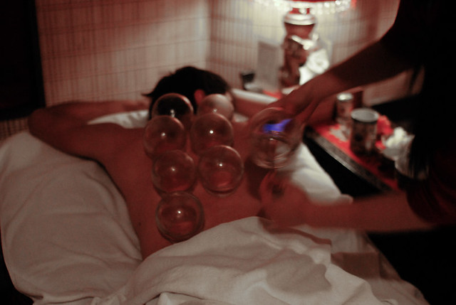

Treatments
I use different cupping treatments, from hijama to mugwort cupping. Each cupping therapy can be applied to specific acupuncture points. These methods are good for both physical and emotional complaints. I always recommend drinking plenty of water after treatment. If you are not sure which method is right for you, you can always contact us.
Wet Cupping
The cups are vacuumed by means of a pump, after a few minutes I gently remove the cups and make small scratches on the skin, I repeat this at every place where I have placed the cups. After I have made the scratches, I place the cups back and I vacuum them. This allows the old blood and toxic substances to leave the body. The body works more efficiently due to the self-healing ability of the body, which is stimulated by hijama. This method can also be applied to certain areas, such as knee or shoulder complaints, low back pain, and so on.